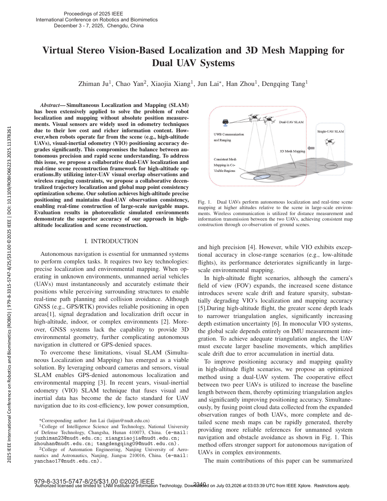

| 标题 | Virtual Stereo Vision-Based Localization and 3D Mesh Mapping for Dual UAV Systems（基于虚拟立体视觉的双无人机系统定位与三维网格建图） |
| 作者 | Zhimeng Ju（鞠志蒙）1、Chao Yan（闫超）2、Xiaojia Xiang（相晓嘉）1、Jun Lai（赖俊，通讯作者）1、Hanzhong Liu（刘汉中）1、Dengqing Tang（汤邓青）1 |
| 单位 | 1. 国防科技大学 智能科学学院（长沙 410073）；2. 南京航空航天大学 自动化学院（南京 210016） |
| 发表 | 2025 IEEE ROBIO（IEEE International Conference on Robotics and Biomimetics），2025年12月3-7日，中国成都 |
| DOI | 10.1109/ROBIO66223.2025.11378261 |
| TL;DR | 提出一种基于虚拟立体视觉的双无人机协同定位与三维网格建图框架——利用双机间视觉共视约束和UWB测距，构造等效于数十米长基线的"虚拟立体相机对"，克服高空场景下单目VIO深度估计的退化问题。核心创新：将多机空间分离显式建模为长基线立体视觉 + 一致性感知的去中心化轨迹优化 + 基于2D Delaunay投影的大场景三维网格构建。 |
| 灵感来源 | 对应的洞察 | 类型 |
|---|---|---|
| 双目立体视觉：基线越长，深度精度越高 ($\sigma_Z \propto Z^2/b$) | 双无人机空间分离天然构成大基线——将"共视区域 + inter-UAV相对位姿"建模为虚拟立体相机对，基线可达数十米 | 架构 |
| MSCKF的边缘化机制——将地图点信息压缩到滑动窗口内位姿的互约束中 | 在MSCKF框架中引入"伪观测"——将跨无人机的共视特征建模为额外的观测方程，无缝集成到卡尔曼滤波状态更新中 | 方法 |
| 分布式优化（ADMM）：解耦 + 一致性约束的交替优化 | 轨迹优化可"解耦"——每架无人机独立优化自身轨迹，inter-UAV约束（共视特征+UWB）作为跨无人机因子交换，仅需稀疏通信 | 数学 |
| 计算机图形学中"降维重建"思想——在2D平面做高质量剖分后反投影回3D | 将3D地图顶点投影到2D平面进行Delaunay三角剖分后反投影——避免了直接3D网格化时的空洞和拓扑冲突问题 | 算法/几何 |
flowchart TB
subgraph DRONE_A["无人机 A · 感知与估计"]
direction LR
IMU_A["IMU · 加速度+陀螺仪 · 400Hz"]
CAM_A["单目相机 · 640x480 · 20Hz"]
MSCKF_A["MSCKF位姿估计 · 状态预测+观测更新"]
MAP_A["局部地图 · 顶点/体素/三角面片/区域"]
end
subgraph DRONE_B["无人机 B · 感知与估计"]
direction LR
IMU_B["IMU · 加速度+陀螺仪 · 400Hz"]
CAM_B["单目相机 · 640x480 · 20Hz"]
MSCKF_B["MSCKF位姿估计 · 状态预测+观测更新"]
MAP_B["局部地图 · 顶点/体素/三角面片/区域"]
end
subgraph COMM["协同通信与融合层"]
WIRELESS["无线通信链路 · 关键帧+地图点+特征描述子"]
UWB["UWB测距 · 机间绝对距离 · 20Hz"]
CO_VIS["共视检测 · 虚拟立体匹配 · 三角化"]
OPTIM["一致性感知优化 · 跨机约束融合"]
end
subgraph OUTPUT["全局输出层"]
TRAJ_A["轨迹A · 6-DoF位姿"]
TRAJ_B["轨迹B · 6-DoF位姿"]
MESH_2D["2D Delaunay三角剖分"]
MESH_3D["三维网格地图 · 双机融合"]
end
IMU_A --> MSCKF_A
CAM_A --> MSCKF_A
MSCKF_A --> MAP_A
IMU_B --> MSCKF_B
CAM_B --> MSCKF_B
MSCKF_B --> MAP_B
MAP_A --> CO_VIS
MAP_B --> CO_VIS
UWB --> OPTIM
CO_VIS --> OPTIM
OPTIM --> WIRELESS
WIRELESS -.->|"反馈: 伪观测+一致性约束"| MSCKF_A
WIRELESS -.->|"反馈: 伪观测+一致性约束"| MSCKF_B
MSCKF_A --> TRAJ_A
MSCKF_B --> TRAJ_B
MAP_A --> MESH_2D
MAP_B --> MESH_2D
MESH_2D --> MESH_3D
classDef local fill:#e8f0fe,stroke:#3b82f6,stroke-width:2px,color:#1d4ed8
classDef comm fill:#fef7ed,stroke:#f59e0b,stroke-width:2px,color:#92400e
classDef out fill:#e6f7ee,stroke:#10b981,stroke-width:2px,color:#047857
classDef sensor fill:#f0ebfd,stroke:#8b5cf6,stroke-width:2px,color:#6d28d9
class IMU_A,CAM_A,IMU_B,CAM_B sensor
class MSCKF_A,MAP_A,MSCKF_B,MAP_B local
class WIRELESS,UWB,CO_VIS,OPTIM comm
class TRAJ_A,TRAJ_B,MESH_2D,MESH_3D out
flowchart TB
subgraph SENSORS["传感器层 · 原始数据采集"]
direction LR
IMU_DATA["IMU数据 · 400Hz · 加速度+角速度"]
CAM_DATA["相机图像 · 640x480 · 20Hz"]
UWB_DATA["UWB测距 · 机间距离 · 20Hz"]
end
subgraph FRONTEND["前端处理层 · 特征提取与状态预测"]
direction LR
FEAT_EX["特征提取 · 角点检测+描述子"]
IMU_INT["IMU预积分 · 状态预测+协方差传播"]
FEAT_MATCH["特征匹配 · 帧间匹配+跨机匹配"]
end
subgraph BACKEND["后端优化层 · MSCKF + 协同优化"]
direction LR
MSCKF_UPD["MSCKF更新 · 特征观测+状态增广"]
PSEUDO_OBS["伪观测构建 · 跨机共视特征约束"]
CONSIS_OPT["一致性感知优化 · 位姿+地图点联合"]
end
subgraph MAPPING["建图层 · 网格地图生成"]
direction LR
DATA_ORG["数据组织 · 顶点/体素/三角面片/区域"]
PROJ_2D["降维投影 · 3D点→2D平面"]
DELAUNAY["Delaunay三角剖分 · 2D网格"]
BACK_3D["反投影 · 2D网格→3D网格"]
MESH_FUSE["双机网格融合 · 区域一致性检查"]
end
IMU_DATA --> IMU_INT
CAM_DATA --> FEAT_EX --> FEAT_MATCH
FEAT_MATCH --> MSCKF_UPD
IMU_INT --> MSCKF_UPD
MSCKF_UPD --> PSEUDO_OBS
UWB_DATA --> CONSIS_OPT
PSEUDO_OBS --> CONSIS_OPT
CONSIS_OPT --> DATA_ORG
DATA_ORG --> PROJ_2D --> DELAUNAY --> BACK_3D --> MESH_FUSE
FEAT_MATCH -.->|"关键帧+描述子"| PSEUDO_OBS
MSCKF_UPD -.->|"状态协方差"| CONSIS_OPT
MESH_FUSE -.->|"地图点反馈"| CONSIS_OPT
classDef sense fill:#f0ebfd,stroke:#8b5cf6,stroke-width:2px,color:#6d28d9
classDef front fill:#e8f0fe,stroke:#3b82f6,stroke-width:2px,color:#1d4ed8
classDef back fill:#fef7ed,stroke:#f59e0b,stroke-width:2px,color:#92400e
classDef map fill:#e6f7ee,stroke:#10b981,stroke-width:2px,color:#047857
class IMU_DATA,CAM_DATA,UWB_DATA sense
class FEAT_EX,IMU_INT,FEAT_MATCH front
class MSCKF_UPD,PSEUDO_OBS,CONSIS_OPT back
class DATA_ORG,PROJ_2D,DELAUNAY,BACK_3D,MESH_FUSE map
flowchart TD
subgraph DEPLOY["阶段1: 系统部署与初始化"]
direction LR
D1["双无人机升空 · 高空作业区域"] --> D2["传感器自检 · IMU标定+相机曝光"] --> D3["静止初始化 · 重力对齐+IMU零偏"] --> D4["建立无线链路 · 握手+时间同步"]
end
subgraph LOCAL["阶段2: 独立位姿估计"]
direction LR
L1["IMU积分 · 400Hz状态预测"] --> L2["视觉特征提取与帧间跟踪"] --> L3["MSCKF状态更新 · 滑动窗口优化"] --> L4["独立轨迹+局部地图点"]
end
subgraph COLLAB["阶段3: 虚拟立体与协同优化"]
direction LR
C1["跨机关键帧交换 · 1-5Hz"] --> C2["共视特征匹配 · 虚拟立体匹配"] --> C3["伪观测+UWB约束构建"] --> C4["一致性感知联合优化 · ADMM"]
end
subgraph MESH_STAGE["阶段4: 三维网格构建与输出"]
direction LR
M1["地图点收集 · 四类数据结构"] --> M2["2D平面投影"] --> M3["Delaunay三角剖分"] --> M4["3D反投影+双机融合"]
end
DEPLOY -->|"系统就绪"| LOCAL
LOCAL -->|"位姿+特征"| COLLAB
COLLAB -->|"优化后位姿+地图点"| MESH_STAGE
C4 -.->|"反馈: 更新协方差"| L3
M4 -.->|"反馈: 地图点优化"| C4
classDef deploy fill:#f0ebfd,stroke:#8b5cf6,stroke-width:2px,color:#6d28d9
classDef local fill:#e8f0fe,stroke:#3b82f6,stroke-width:2px,color:#1d4ed8
classDef collab fill:#fef7ed,stroke:#f59e0b,stroke-width:2px,color:#92400e
classDef mesh fill:#e6f7ee,stroke:#10b981,stroke-width:2px,color:#047857
class D1,D2,D3,D4 deploy
class L1,L2,L3,L4 local
class C1,C2,C3,C4 collab
class M1,M2,M3,M4 mesh
| 类别 | 内容 | 频率/维度 |
|---|---|---|
| 输入 | (1) IMU数据（加速度+角速度）；(2) 单目相机图像（640x480）；(3) UWB机间测距值；(4) 来自另一无人机的关键帧+地图点信息 | IMU 400Hz / 相机 20Hz / UWB 20Hz |
| 输出 | (1) 每架无人机的6-DoF位姿轨迹（位置+姿态）；(2) 三维网格地图（顶点+三角面片+拓扑结构）；(3) 全局一致的地图融合结果 | 位姿 20Hz / 网格 按需更新 |
| 目标 | 在高空（>50m）场景中实现优于单机VIO方案的定位精度，并构建拓扑一致的大场景三维网格地图 | 定位精度：相比单机VIO提升显著；地图：实时可用的三维网格 |
这是一个分布式状态估计与三维重建问题，具体属于多机器人协作SLAM（C-SLAM）范畴。与传统SLAM不同，本文的独特约束在于：(1) 高空场景使单目深度估计退化（$\sigma_Z \propto Z^2/b$ 的尺度律）；(2) 双机之间的视觉共视构成天然的"虚拟长基线"；(3) 去中心化架构要求每架无人机独立完成定位与建图，仅通过稀疏信息交换实现协同。场景为室外高空自主飞行，任务目标是在无GPS依赖的前提下为无人机提供可靠的导航地图和三维环境模型。
表头用英文，正文用中文
| Prior Method | Core Idea | Why It Fails |
|---|---|---|
| Monocular VIO（单目视觉惯性里程计，如VINS-Mono、OpenVINS） | 单目相机+IMU紧耦合，通过滑动窗口优化联合估计位姿和特征点深度 | 在近地场景表现良好，但高空中因深度不确定性随高度平方增长而精度急剧退化。IMU长时间积分漂移累积，而视觉观测的深度信息不足以约束漂移。论文实验中OpenVINS和VINS-Fusion在高空场景（>50m）下定位误差随飞行距离快速增大。 |
| Stereo VIO（双目视觉惯性里程计） | 利用左右相机之间的已知固定基线进行三角化，提供绝对尺度深度估计 | 双目基线固定（通常10-20cm），在高空场景中基线-深度比同样过小（20cm vs 50m → 三角化角度 ~0.23度），深度精度并未实质改善。且双目系统重量、功耗和计算开销是单目的两倍，不适合小型无人机平台。 |
| Multi-Robot Collaborative SLAM（多机器人协作SLAM，如CVI-SLAM、Kimera-Multi） | 多个机器人通过共享地图点和关键帧实现协同定位与建图 | 多数方法假设近距离场景（室内或低空），共视信息丰富、特征密集。在高空场景中，共享的特征信息本身质量差（深度不确定性高），直接套用C-SLAM框架不能解决根本的观测几何退化问题——因为"多个低质量观测的融合"仍然不能抵消"每个观测自身的先天性不足"。 |
| GPS/RTK-based Localization（卫星导航定位） | 利用全球定位系统提供绝对位置参考，直接解决定位问题 | 依赖外部基础设施——在电磁拒止、峡谷、隧道等GPS不可用环境中完全失效。且GPS不提供三维环境地图，无法支持自主导航中的避障和路径规划需求。 |
本文的方法分为两个主要模块——定位模块（基于MSCKF的协同状态估计）和建图模块（基于Delaunay投影的网格构建）。两个模块在每架无人机上独立运行，通过无线通信交换关键帧和地图点信息实现协同。以下按公式组逐一拆解。
LaTeX rendered by MathJax。显示公式用 $$...$$，行内公式用 $...$。符号解释请用中文。
| 参数 | 取值 | 含义 | 为什么取这个值 |
|---|---|---|---|
| 相机分辨率/帧率 | 640x480 / 20Hz | 单目相机图像尺寸和采集频率 | 在机载计算资源限制下实现实时处理——20Hz是视觉SLAM中平衡跟踪鲁棒性和计算负载的常见选择 |
| IMU频率 | 400Hz | 惯性测量单元的数据更新率 | 高速IMU确保状态预测精度——在20Hz视觉帧之间（50ms）可完成约20次IMU预测，显著减少积分误差 |
| UWB测距频率 | 20Hz | 超宽带无线测距的更新率 | 与相机帧率同步——确保每帧视觉更新时都有对应的距离约束可用，避免时间对齐误差 |
| 飞行高度 | 30~80m | 实验中的典型飞行高度 | 在大于50m高度时传统VIO开始显著退化——这个范围恰好验证了方法在"退化区域"中的优势 |
| 无人机间距 | 10~50m | 两架无人机之间的典型水平间距 | 10m+间距使三角化角度从 < 1度提升到 > 5度——在"精度-共视覆盖率-通信"三维空间中存在最优窗口 |
| MSCKF滑动窗口 | 10~20帧 | 状态向量中保留的相机位姿克隆数量 | 窗口太小则三角化基线不足，窗口太大则计算复杂度上升——10-20帧是工程上的经验最优值 |
理解本文需要掌握三个关键基础原理：MSCKF（如何用恒定计算复杂度实现多状态视觉惯性融合）、虚拟立体视觉（双机共视如何等效于长基线双目）、Delaunay降维网格（为什么在2D上做三角剖分后反投影优于直接3D重建）。
MSCKF边缘化的工程直觉：假设相机在不同时刻观测到了同一个3D点——与其保留这个点作为一个优化变量（然后为了恢复它而求解大矩阵），不如直接问"这个点在不同时刻的观测，告诉我关于这些时刻相机位姿之间的什么信息？"——将这个信息提取出来，然后把该点"忘记"（从状态中移除）。这就是边缘化的核心思想：压缩信息而不丢失信息。在本文中，跨无人机的共视特征也可以按照同样的逻辑处理——对方看到的同一个点，提供的约束信息同样可以被压缩为"两机在该时刻的位姿之间应满足什么相对关系"。
步骤 1：IMU数据（400Hz）驱动状态预测——加速度积分得速度+位置，角速度积分得姿态，协方差同时向前传播。
步骤 2：每帧图像到达时，将当前相机位姿的克隆（clone）加入状态向量。对新特征与滑动窗口内已有特征进行匹配。
步骤 3：特征被足够多帧观测后离开视野时，对其所有观测形成约束方程组——更新所有相关相机位姿克隆。更新完成后该特征被边缘化（从状态中移除）。
跨机扩展：来自另一个无人机的共视特征作为"伪观测"加入步骤3的约束方程组——处理方式完全对称，只是观测噪声模型不同。
步骤 1：将所有相机位姿和所有地图点作为优化变量存储在因子图（factor graph）中——节点数随飞行时间线性增长。
步骤 2：每次新增观测，在因子图中添加对应的重投影误差边。
步骤 3：周期性地对整个因子图执行非线性优化——计算量随节点数立方增长，长距离飞行后无法实时完成。
为什么不适用：10分钟高空飞行可能产生数千个关键帧和数万个地图点——全局优化的计算复杂度在机载ARM处理器上远超实时性约束（每帧 < 50ms）。
伪观测的数学本质：当无人机 A 观测到地图点 $P$ 的像素坐标 $u_A$ 时，A 可以在自身状态估计中预测 $P$ 在无人机 B 相机中应该出现的像素位置 $\hat{u}_B$。B 随后报告自己实际观测到的 $u_B$。如果两个无人机对 $P$ 的位姿估计都正确，则 $u_B = \hat{u}_B$；差异 $\tilde{z} = u_B - \hat{u}_B$ 就是"伪观测残差"。这个残差被作为额外的观测方程集成到MSCKF标准更新中——它不来源于自身的传感器数据，而是来源于"另一个无人机看到了同一个东西"这一逻辑事实。
| 对比维度 | 单目VIO（传统） | 虚拟立体视觉（本文） |
|---|---|---|
| 深度三角化基线 | 相邻帧间运动（0.1~0.5m） | 双机间距（10~50m，动态可调） |
| 三角化角度 $Z$=50m | < 1度 | 5-15度 |
| 尺度信息来源 | IMU加速度计（长时间漂移） | IMU + UWB测距 + 共视约束（多源冗余） |
| 高空(50m+)精度 | 急剧退化（$\sigma_Z \propto Z^2/b$） | 显著优于单目（$b$ 增大100倍） |
| 对通信的依赖 | 无 | 需交换关键帧+特征描述子（稀疏，50-200KB/s） |
四类地图数据结构：本文的地图存储由四类数据构成——(1) 顶点（Vertices）：3D点的位置和属性（唯一索引+法向量）；(2) 体素（Voxels）：对3D空间进行规则划分，加速空间查询；(3) 三角面片（Patches）：Delaunay剖分生成的三角形——包含三个顶点索引+法向量+所属区域ID；(4) 区域（Regions）：按拓扑连通性分割的独立网格区域——双机融合时以区域为单位进行一致性检查，避免全局冲突。
下图由本地 PDF Ju et al. - 2025 - Virtual stereo vision-based localization and 3D mesh mapping for dual UAV systems.pdf 第 1 页直接渲染，用于核对论文的框架或首个主要实验图。

Local PDF page 1; no external or fabricated asset.
| 数据问题 | 潜在困难 | 严重程度 |
|---|---|---|
| 共视区域不足 | 虚拟立体的伪观测数量骤降 → 信息增益不足 → 定位退化为单机VIO水平。两机执行不同任务（如高空巡航 vs 低空侦察）时尤为严重 | 高 |
| 通信延迟与丢包 | 来自对方的关键帧延迟到达 → 伪观测时间戳不匹配 → 状态更新中引入时间同步误差。高动态飞行（快速机动）中问题更突出 | 较高 |
| 跨无人机特征误匹配 | 视角变化大+光照差异大 → 匹配错误率高于同机帧间匹配 → 错误伪观测污染MSCKF估计 → 需要更强健的outlier剔除机制 | 高 |
| UWB多径效应（真实环境） | 模拟中UWB被建模为高斯噪声——真实环境中多径效应（地面/建筑物反射）使测距误差远超高斯模型 → 非高斯噪声可能导致约束失效 | 较高 |
| 参考文献 | 为什么重要 |
|---|---|
| Mourikis & Roumeliotis (2007) — A Multi-State Constraint Kalman Filter for Vision-aided Inertial Navigation. ICRA 2007 | MSCKF的原始论文——奠定"边缘化地图点、保留位姿互约束"的滤波范式。理解本文定位模块必须从这里开始。 |
| Geneva et al. (2020) — OpenVINS: A Research Platform for Visual-Inertial Estimation. ICRA 2020 | MSCKF的现代开源实现——如果要在MSCKF基础上开发双机协同功能，OpenVINS是最佳的代码起点。 |
| Qin et al. (2018) — VINS-Mono: A Robust and Versatile Monocular Visual-Inertial State Estimator. IEEE TRO 2018 | 图优化的VIO代表——理解滤波vs优化在高空场景中的精度差异有助于把握"算力-精度-鲁棒性"的三角权衡。 |
| Karrer et al. (2018) — CVI-SLAM: Collaborative Visual-Inertial SLAM. IEEE RA-L 2018 | 多无人机协作VIO-SLAM的先驱——本文可视为CVI-SLAM在"高空场景+通信受限"条件下的专门化改进。 |